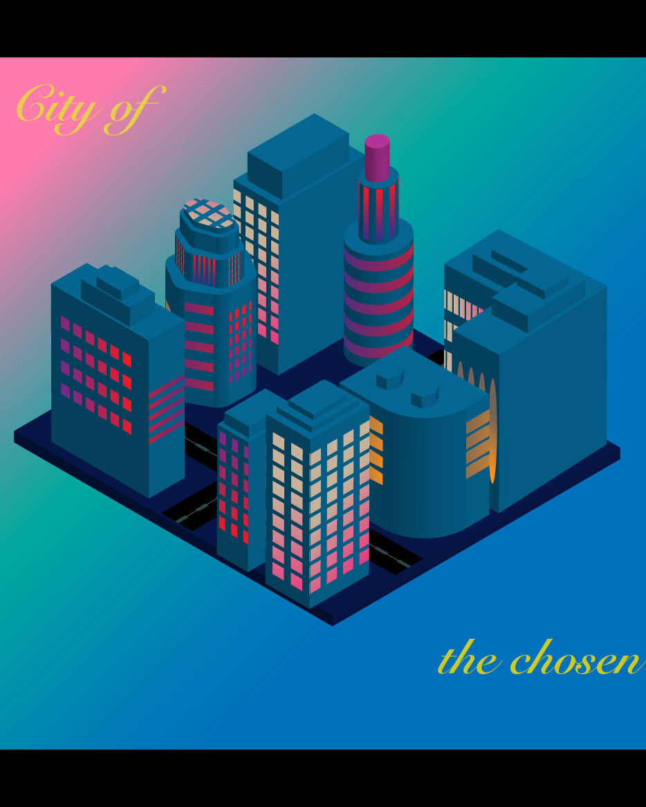
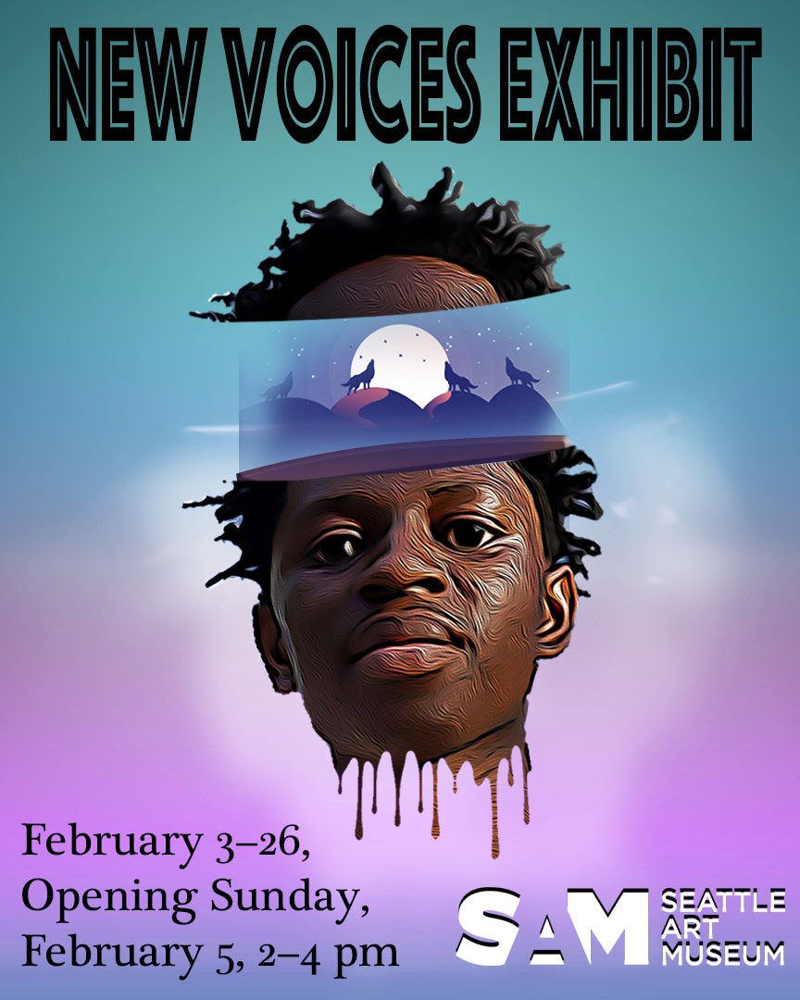

Hello, my name is
Abdule Touray
I am a Web & UX Designer
About Me
Multimedia Programing & Design
Hey there, my name is Abdule Touray, I am a student currently studying multimedia programming and design. My focus is on web design and UX/UI, and I'm really dedicated to mastering these skills. I believe that creating visually appealing and intuitive interfaces is key to delivering great user experiences, whether it's on websites, apps, or other digital products. I'm always striving to learn more and improve my craft, and I'm excited to see where my passion for design and technology will take me. Overall, I'd say I'm a creative and imaginative person with a drive to succeed, and I'm confident that I'll make a real impact in the world of web design.
My Skills
As a student who is just starting out in the design field, I am eager to learn and grow my skills in UX, Graphic, and Web Design. I am a motivated and enthusiastic learner, and I am always looking for new design challenges to tackle. I am confident in my ability to bring value to any design project, and I am eager to continue building my portfolio and learning from experienced designers.
UX Designer
As a student who has just started learning UX Design, I am eager to build my foundation in user-centered design methodologies and principles. I have been studying design tools such as Sketch, Figma, and Adobe Creative Suite, and have a strong understanding of the design thinking process and how to conduct user research. I have also started working on personal design projects to apply my knowledge and build my portfolio. I am a quick learner and am eager to grow my skills in UX Design, and I am excited about the opportunity to work on real-world design challenges.
Web Designer
As a beginner Web Designer, I have a solid understanding of HTML, CSS, and JavaScript, and I have experience building simple websites using these technologies. I am familiar with popular front-end frameworks such as Bootstrap and Foundation, and I have a strong understanding of web design principles and best practices. I have also started exploring CMS platforms such as WordPress, and I am eager to learn more about integrating my designs with back-end systems. I am passionate about web design and am eager to continue learning and growing my skills in this area.
Graphic Designer
As a beginner Graphic Designer, I have a strong understanding of design fundamentals such as typography, color theory, and composition. I am proficient in design tools such as Adobe Illustrator, Photoshop, and InDesign, and I have experience working on personal design projects such as logos, brochures, and social media graphics. I am eager to continue learning and growing my skills in graphic design, and I am excited about the opportunity to work on real-world design challenges.
My Portfolio
This is my work.

My work
cityscape

My work
Self-portrait

My work
Poster

My work
Landscape
My Websites:

Cuny websites
How To Reach Me
My email is: atovray18@gmail.com